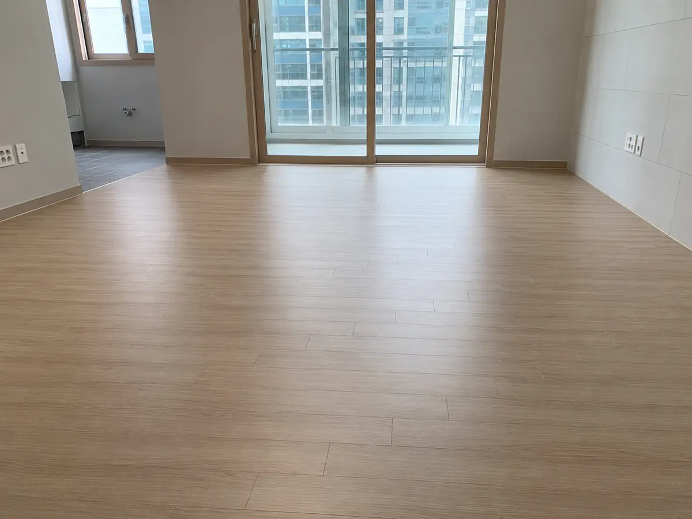
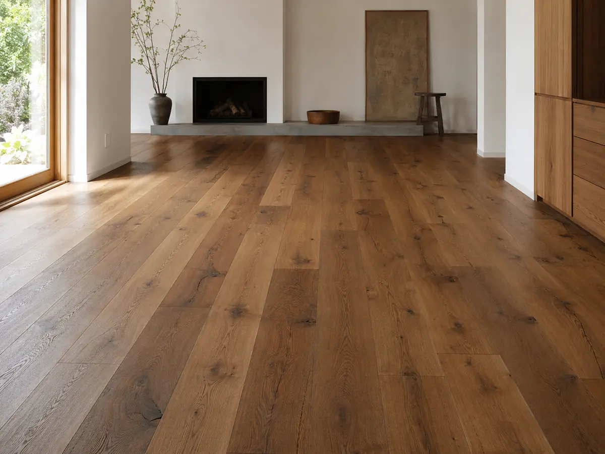
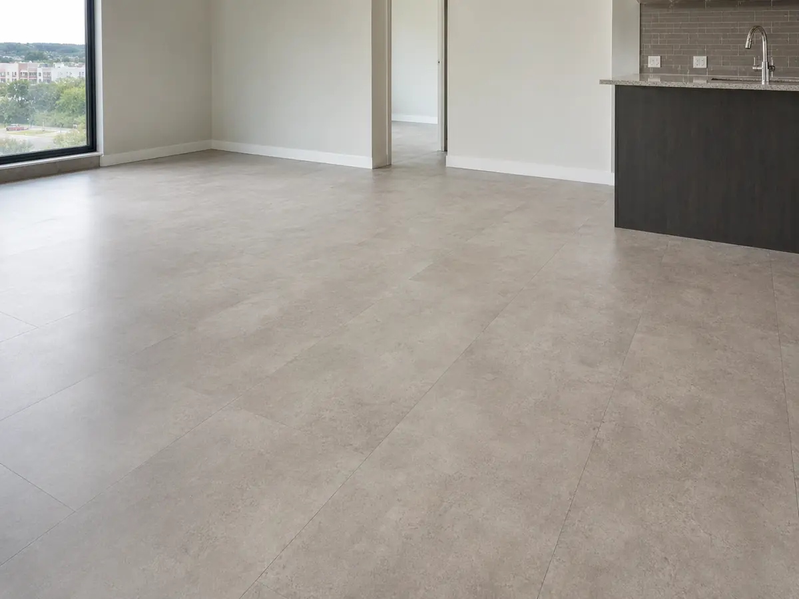
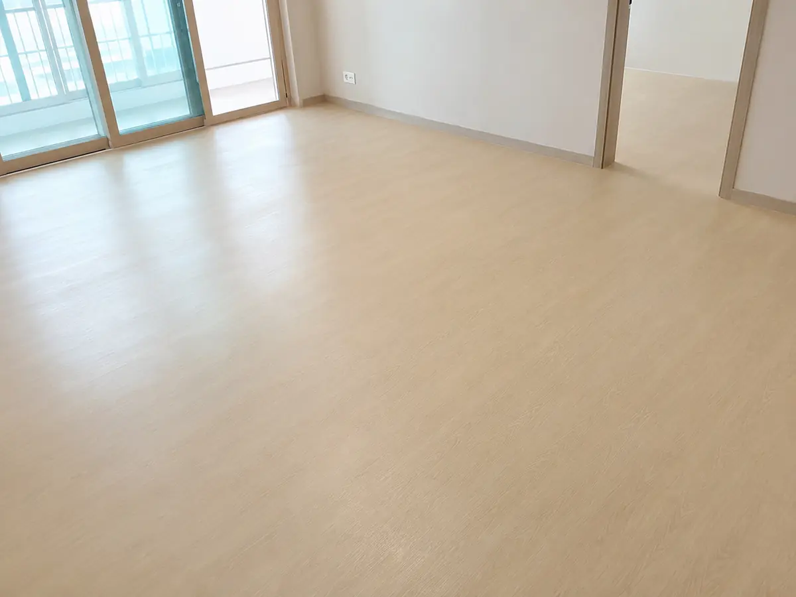

마루 (바닥재)
한 줄 결론
아파트 일반 거주는 강마루가 평균. 강화마루는 비용·소음, 원목마루는 감각·내구, LVT는 욕실·주방 인접 부위에 적합.
종류별 비교
강마루
가장 대중적
12~16만원/평 (자재+시공)
발열·소음·가격 균형, 보수 용이
물에 약함, 들뜸 가능
강화마루
저예산·임대
8~12만원/평 (자재+시공)
저렴, 시공 빠름, 재이용 가능
발걸음 소리, 발열 효율↓
원목마루
프리미엄
25~45만원/평 (자재+시공)
독보적 질감, 시간이 갈수록 멋
습도 민감, 스크래치 표시
LVT (장판류)
물·습기 강함
7~12만원/평 (자재+시공)
방수·청소 쉬움, 발열 양호
합성소재 질감
데코타일
임대·소규모 리뉴얼
5~9만원/평 (자재+시공)
시공 빠름, 단가 낮음
디자인 단조, 무게에 눌림
예시 사진 (실물 비교)
아래 카드는 사진이 추가되면 자동으로 노출됩니다. 사진 업로드 방법은 README 참고.





두께·발열 가이드
아파트 바닥난방에는 ‘열전도율 ↑’이 중요합니다. 8mm 이하는 발열 효율이 좋지만 발걸음 소리가 큽니다.
| 두께 | 발열 효율 | 층간 소음 | 추천 위치 |
|---|---|---|---|
| 3~5mm (LVT) | ★★★★★ | 발걸음 ↑ | 주방·세탁실 |
| 7~8mm | ★★★★ | 발걸음 보통 | 거실·침실 표준 |
| 10~12mm | ★★★ | 차분 | 거실·드레스룸 |
| 14mm 이상 | ★★ | 저상 | 원목·고급 |
시공 전 필수 점검
하부 평탄도
3m 자 기준 단차 3mm 이내. 노후 아파트는 셀프 레벨링 별도 비용
습도
40~60% 권장. 신축 30일 내, 누수 직후 시공은 들뜸 원인
걸레받이
기존 유지 / 신규 / 천장형 명시. 평당 단가에 미포함이 많음
문틀 단차
기존 마루 위에 덧대면 문 안 닫힘 — 철거 필수
계약·견적 체크
- 브랜드·품번 — LX(지인) / 동화(나투스) / 구정 등 + 시리즈명
- 철거·평탄작업 — 포함 여부, 단가 별도 표기
- 걸레받이·문턱 — 포함/제외 명기
- 여분 — 보수용 1박스 보관 요청 (단종 대비)
- 하자 보증 — 마루는 보통 2년
자주 발생하는 하자
- 들뜸·삐걱임 — 하부 평탄도 불량, 접착 불량. 부분 재시공.
- 이음 벌어짐 — 습도 변화. 1~2달 내 발생 시 재시공.
- 변색 — 직사광선 장기간 노출. 시공 하자 ✕.
- 물 자국 — 강마루는 1시간 이상 침수 시 영구 변형.
출처
- 한국목재공업협동조합 마루재 시공 표준
- KS F 3126 (마루판)·KS M 3702 (PVC 바닥재)
- 실내공기질 관리법 (HB·E0·E1 등급)
⚠
면책 가격·시공 정보는 시장 관행 기반 참고용입니다. 정확한 견적은 현장 실측이 필요합니다.